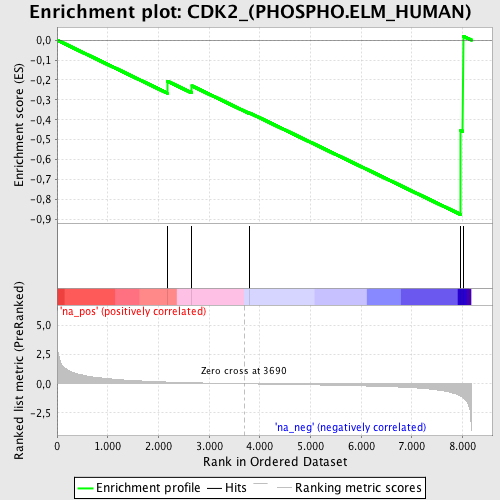
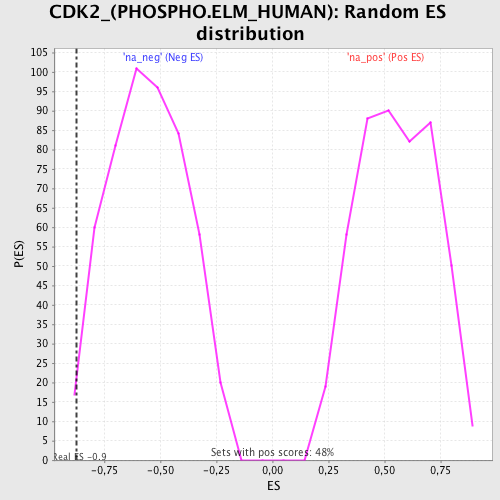

| | | Dataset | 52288 |
| Phenotype | NoPhenotypeAvailable |
| Upregulated in class | na_neg |
| GeneSet | CDK2_(PHOSPHO.ELM_HUMAN) |
| Enrichment Score (ES) | -0.8754261 |
| Normalized Enrichment Score (NES) | -1.5738931 |
| Nominal p-value | 0.013539651 |
| FDR q-value | 0.40744817 |
| FWER p-Value | 0.465 |
Table: GSEA Results Summary

Fig 1: Enrichment plot: CDK2_(PHOSPHO.ELM_HUMAN)
Profile of the Running ES Score & Positions of GeneSet Members on the Rank Ordered List

Fig 2: CDK2_(PHOSPHO.ELM_HUMAN): Random ES distribution
Gene set null distribution of ES for CDK2_(PHOSPHO.ELM_HUMAN)